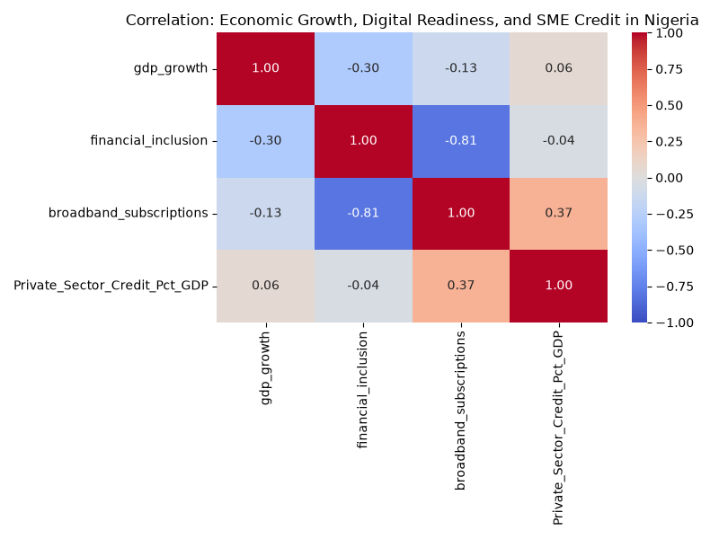

The Impact of AI on Economic Growth & Financial Inclusion in Nigeria
Looking at how digital infrastructure actually affects SME lending and the broader economy.
The Credit Gap
SMEs account for roughly 50% of Nigeria's GDP and over 80% of employment. Yet, a massive chunk of these businesses struggle to access traditional bank loans due to a lack of collateral and formal credit history.
The AI Solution
FinTechs are stepping in using machine learning to analyze alternative data—such as mobile top-ups and utility bills—to instantly assess credit risk and bypass the traditional banking bottlenecks.
Empirical Data Insight
Better Internet = More Loans
Our analysis of World Bank data reveals a moderate positive correlation (0.37) between broadband subscriptions and domestic credit to the private sector.
This indicates that as Nigeria's digital foundation strengthens, financial systems are better equipped to serve "invisible" SMEs.

AI and Economic Growth in Nigeria: An Empirical Look at SME Credit
1. Introduction
Nigeria is Africa's largest economy, but despite the top-line GDP growth over the last twenty years, getting that wealth to actually spread around is still a huge problem. A massive chunk of the adult population doesn't use formal banking. Small and Medium Enterprises (SMEs) are the backbone of the economy—making up over 80% of jobs and about half the GDP—yet they struggle constantly to get loans. Banks usually blame this on high costs and the fact that most of these small businesses don't have collateral or a formal credit history.
Lately, Artificial Intelligence (AI) and machine learning are starting to change how this works. Instead of needing a traditional credit score, FinTech companies are using AI models to look at alternative data: things like mobile phone top-ups, utility bills, and digital payment histories. This lets them figure out if someone is a good candidate for a loan much faster and cheaper.
2. Literature Review
2.1. Tech and Growth
Most global reports suggest AI will add trillions to the economy by 2030. In places like Africa, people often talk about AI as a way to "leapfrog" older technologies. But when you look at the Oxford Insights AI Readiness Index, the reality is a bit more sobering. While the tech scene in Lagos is booming, Nigeria still struggles with basics like reliable electricity and fast internet outside major cities, which are absolute requirements for running heavy AI models.
2.2. Financial Inclusion
Groups like EFInA track financial inclusion closely, and their data shows that while things are getting better (thanks to mobile money), rural areas and women are still getting left behind. SMEDAN consistently points out that lack of financing is the number one reason small businesses fail. Traditional banks just aren't built to lend to informal vendors.
3. Methodology
Since there isn't a massive, neat dataset labeled "AI usage by Nigerian SMEs," we had to use macro-level proxies to test our ideas:
- Digital Readiness: We used fixed broadband subscriptions. If you don't have internet, you aren't using cloud AI.
- SME Credit Access: We used the World Bank metric for "Domestic credit to private sector (% of GDP)".
- Economic Impact: Annual GDP growth percentage.
4. Results and Discussion
4.1. Better Internet = More Credit
Our correlation matrix showed a positive link (0.37) between broadband subscriptions and credit to the private sector. This makes sense. As the country's digital backbone gets stronger, it paves the way for FinTechs to run the AI algorithms needed to score and lend to people who were previously off the grid. Basically, better tech infrastructure seems to open up the lending taps.
4.2. The GDP Disconnect
On the flip side, we saw a slight negative correlation (-0.13) between digital readiness and short-term GDP growth. This might sound weird at first, but Nigeria's GDP is famously tied to global oil prices. A dip in oil can tank the GDP even if the tech sector is doing great. Also, digital upgrades usually take a few years to actually show up in national productivity numbers.
5. Conclusion and Policy Ideas
AI, especially algorithmic credit scoring, is a real chance to fix Nigeria's SME lending problem. Our data points to a clear link: when you improve digital infrastructure, private sector credit goes up. But it's not going to fix the whole economy overnight.
Based on what we found, here's what should happen next:
- Focus on the Basics: The government needs to push broadband outside of just Lagos and Abuja. You can't have an AI revolution on 2G networks.
- Regulatory Sandboxes: The Central Bank of Nigeria needs to give FinTechs a safe space to test these AI lending models so they can innovate without breaking banking laws.
- Watch Out for Bias: Algorithms can be biased. We need local rules to make sure AI doesn't end up discriminating against rural farmers or women who might not have a massive digital footprint.